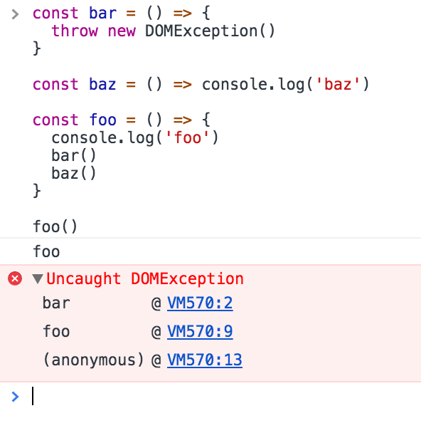
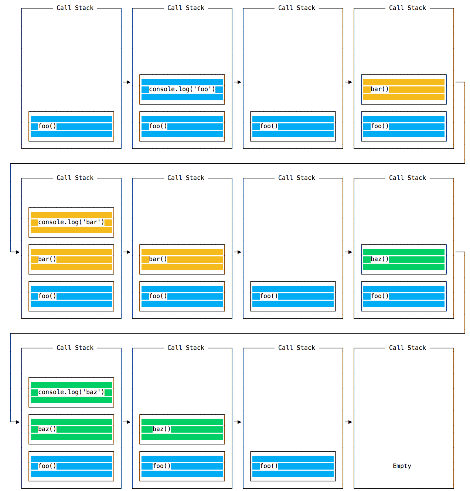
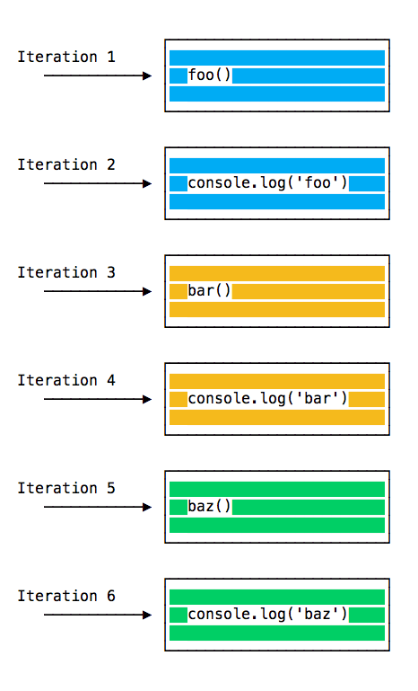
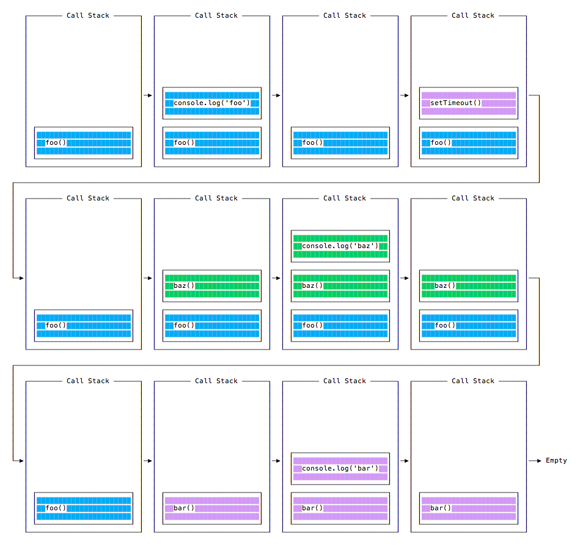
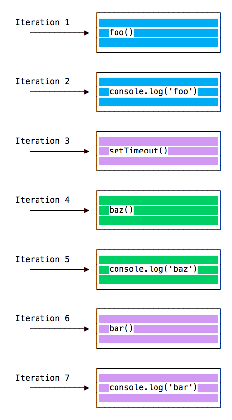

javascript-事件循环 event-loop
从输入URL到页面加载发生了什么 > JavaScript-的-async-await
事件循环是 JavaScript 最重要的内容之一。
本节旨在解释 JavaScript 如何处理单个线程的内部细节，以及如何处理异步函数。
您的 JavaScript 代码运行是单线程的。一次只发生一件事。
这是一个实际上非常有用的限制，因为它简化了很多程序，而不必担心并发问题。
您只需要注意编写代码的方式，避免任何可能阻塞线程的内容，如同步网络请求或无限循环。
通常，在大多数浏览器中，每个浏览器标签都有一个独立的事件循环机制，以使每个进程隔离，并避免 web 页面具有无限循环或繁重的处理，从而阻塞整个浏览器。
浏览器环境管理多个并发事件循环，例如处理 API 调用。 Web Workers 也在自己的事件循环中运行。
您只要明白您的代码将在单个事件循环上运行，并在编写代码时考虑到这一点，以避免阻塞它。
阻塞事件循环
任何执行时间过长不能将控制权返回给事件循环的 JavaScript 代码都会阻塞页面内其它代码的执行，甚至阻塞 UI 线程，用户不能单击、滚动页面，等等。
几乎所有 JavaScript 中的 I/O 原语都是非阻塞的，比如网络请求，Node.js 文件系统操作等。 阻塞是个例外，这就是为什么 JavaScript 基于回调，以及最近的 promises 和 async/await 。
调用堆栈
调用堆栈是 LIFO 队列（Last In, First Out）。 就是个栈 先进后出, 后出先进.
事件循环不断检查调用堆栈里是否仍有函数需要运行。
在这样做的同时，它将它找到的任何函数调用添加到调用堆栈，并按顺序执行每个调用。
您可以在调试器或浏览器控制台中了解您可能熟悉的错误堆栈跟踪吗？ 浏览器在调用堆栈中查找函数名称，以通知您哪个函数发起当前调用：
内到外, 栈

一个简单的事件循环说明
我们来举一个例子：
JavaScript 代码:
1 | const bar = () => console.log('bar'); |
此代码打印:
JavaScript 代码:
1 | foo; |
正如大家所料，和预期一样。
当此代码运行时，首先调用 foo() 。在 foo()里面我们先调用 bar()，然后调用 baz()。
此时调用堆栈如下所示：

每次迭代的事件循环都会查看调用栈中是否存在某些内容并执行它：

直到调用堆栈为空。
函数执行队列
上面的例子看起来很正常，没有什么特别之处：JavaScript 找到要执行的东西，按顺序运行它们。
让我们看看如何推迟一个函数，直到堆栈清空。
setTimeout(() => {}), 0) 用例是调用一个函数，会在代码中其他每个函数都已执行后再执行它。
举个例子：
JavaScript 代码:
1 | const bar = () => console.log('bar'); |
这段代码打印出来，结果是：
JavaScript 代码:
1 | foo; |
当此代码运行时，首先调用 foo() 。 在 foo() 里面我们首先调用 setTimeout ，将 bar 作为参数传递，然后将 0 作为计时器传递，意思是让它尽可能快地运行。 然后调用 baz()。
此时调用堆栈如下所示：
注意看是 foo() 执行完后 再执行 bar()

以下是我们程序中所有函数的执行顺序：

为什么会这样？
消息队列
当调用 setTimeout() 时，浏览器或者 Node.js 就会启动计时器。 一旦计时器到期，在这个例子中，当我们将 0 作为超时时间，回调函数立即被放入 消息队列 中。
消息队列也包含用户发起的事件，如单击事件、键盘事件，或者在代码有机会对 fetch 响应作出响应之前，fetch 响应就已经进入队列了。再或者像 onLoad 这样的 DOM 事件。
循环优先于调用堆栈，它首先处理它在调用堆栈中找到的所有内容，一旦没有任何东西，它就会在事件队列中查找要执行的内容。
我们不必等待 setTimeout ，fetch 或其他函数来完成它们自己的工作，因为它们是由浏览器提供的，并且它们依赖于自己的线程。例如，如果您将 setTimeout 超时设置为 2 秒，那么您不必等待 2 秒 — 等待在其他地方发生。
ES6 作业队列(Job Queue)
ECMAScript 2015 引入了 Promises（也在 ES6 / ES2015 中引入） ，使用了作业队列(Job Queue)概念。 这是一种尽快执行异步函数的方法，而不是放在调用堆栈的末尾。
在当前函数结束之前 resolve 状态的 Promises 将在当前函数之后立即执行。
我发现在游乐园里乘坐过山车的情况可以很好地解释 ES6 作业队列(Job Queue)：消息队列让你排队等候队列，等队列中所有其他人坐完之后乘坐，而作业队列(Job Queue)相当于是快速通行票，可以让您在乘坐完之后立即再乘一次。
例如：
JavaScript 代码:
1 | const bar = () => console.log('bar'); |
此代码打印:
JavaScript 代码:
1 | foo |
这是 Promises（包括基于 promises 的 Async/await）和普通的旧异步函数（通过 setTimeout() 或其他平台 API ）之间的巨大差异。